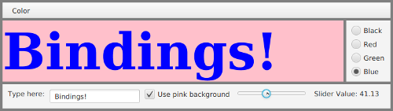

Properties and Bindings
We have seen that GUI programming makes heavy use of events, including low-level mouse and keyboard events and higher-level events such as those that are generated when the user makes a menu selection or adjusts the value of a slider. In Subsection 6.4.5, we saw that events from a slider actually come from an "observable property" of the slider. That is, in order to respond to changes in the value of a Slider, sldr, you need to register a listener with the valueProperty of the slider:
sldr.valueProperty().addListener( . . . );When the value of the slider changes, its valueProperty emits an event that allows your event-handling code to respond to the change.
In fact, the value property of a slider is an object of type DoubleProperty. A DoubleProperty has several aspects. First of all, it wraps a value of type double, and it has methods get() and set() for retrieving and changing that value. Second, it is an "observable value," which means that it emits events when the double value is changed. Third, it is a "bindable property," an aspect that is possibly unique to JavaFX. A bindable property can be bound to another property of the same type. Properties that are bound in this way are forced to have the same value. Bindable properties are used throughout the JavaFX API. This section explores how and why they are used.
The classes discussed in this section are defined in package javafx.beans and its subpackages. However, you will rarely need to import classes from those packages into your JavaFX programs, since you will mostly be using objects that already exist.
Observable Values
Many instance variables in JavaFX objects are observable values, meaning that they emit events. Many of the observables are actually observable properties in the sense that they are bindable. The width and height of a canvas are observables of type DoubleProperty. The text in a text field or label is an observable of type StringProperty. The list of children of a Pane is an observable of type ObservableList<Node>. A checkbox has observable property of type BooleanProperty that says whether the box is currently checked. The color of the text in a label is an observable of type ObjectProperty<Paint>.
An observable value emits two kinds of events. It emits a change event whenever the value changes. A handler for the event must implement the parameterized functional interface ChangeListener<T>, which defines a method changed(target,oldValue,newValue). The first parameter of change() is the observable whose value has changed; the second parameter is the previous value of that observable; and the third parameter is the new value. Suppose, for example, we want the text on a label to display the current value of a slider. When the slider value changes, we need to change the text on the label to match. One way to do that is to register a change listener with the property that records the value of the slider:
slider.valueProperty().addListener(
(t,oldVal,newVal) -> label.setText("Slider Value: " + newVal) );However, we will see below that there is a better way to accomplish the same thing.
The second type of event emitted by an observable value is an invalidation event, which is emitted when the current value becomes invalid for some reason. An invalid value will never be seen by another object; any attempt to read the value will cause the value to be recomputed and become valid again. An invalidation event is a notice that the value needs to be recomputed, but the value won't actually be recomputed until it is needed. This is something called "lazy evaluation" of the value: The work of recomputing the value is not done until the new value is actually needed for something. Lazy evaluation can be more efficient than recomputing the value every time it is invalidated. Let's say a dozen things happen that invalidate the value before the value is needed—with lazy evaluation, the value will only be recomputed once, when it is needed, rather than a dozen times. More important for us, the observable would only emit one invalidation event, not a dozen. This avoids multiple redundant calls to invalidation listeners. In most cases in JavaFX, invalidation listeners should be used in preference to change listeners.
An InvalidationListener defines the single method invalidated(obv), where the parameter is the observable that has been invalidated. Consider this code, where sayHello is a CheckBox:
sayHello.selectedProperty().addListener( e -> {
if (sayHello.isSelected())
label.settext("Hello");
else
label.setText("Goodbye");
});In this example, an InvalidationListener is registered as a listener. You could accomplish almost the same thing using sayHello.setOnAction(). However, an ActionListener would be called only when the user changes the selected state of the checkbox, while the invalidation listener is called whenever the value changes, including changes made by calling sayHello.setSelected(). Note that ChangeListeners are also registered using a method named addListener(). The compiler can tell the difference, even when the listener is given by a lambda expression, because a lambda expression for a ChangeListener has three parameters, while a lambda expression for an InvalidationListener has only one parameter.
You might have asked yourself what would happen if the selectedProperty of sayHello was merely invalidated rather than changed. Would sayHello.isSelected() return the current invalid value or the new value? In fact, calling sayHello.isSelected() would force the computation of the new value, and it would return the new value. An invalid value is never seen because any attempt to read it forces the new value to be computed.
The general pattern in JavaFX is that an observable property of an object is accessed by calling an instance method whose name ends with "Property". For example, the value property of a slider is given by slider.valueProperty(), and the text property of a label is given by label.textProperty(). Some JavaFX objects have observable values that are not properties. An observable property is bindable, as we will see in the next section. A plain observable value is not bindable, but it does emit change events and invalidation events, and you can register listeners if you want to respond to changes in the value.
Bindable Properties
Many JavaFX observable properties can be bound to another property of the same type. (The exceptions are "read-only properties"; you can't bind a read-only property to another property, although you can bind a property to a read-only property.) As a basic example, suppose that we want the text in a label to always be the same as the text in a text field. That can be implemented simply by binding the textProperty of the label to the textProperty of the text field:
Label message = new Label("Never Seen");
TextField input = new TextField("Type Here!");
message.textProperty().bind( input.textProperty() );The bind() method forces the value of message.textProperty() to be the same as the value of input.textProperty(). As soon as bind() is executed, the text from the text field is copied into the label, so that the initial text in the label—"Never Seen" in the example—is never seen by the user. As the program runs, any change to the text in the text field will automatically be applied to the label as well, whether that change is due to the user typing in the text field or due to input.setText() being called. Bindings are implemented internally using events and listeners, but the point is that you don't have to set up the listeners and respond to the events yourself—everything is set up by the bind() method.
When bind() is used to bind a property to another property, it becomes illegal to change the value of the bound property directly. In the example, any call to message.setText() would throw an exception. And of course, a property can only be bound to one other property at a time. The unbind() method, which takes no parameter, can be used to remove a binding:
message.textProperty().unbind();The sample program BoundPropertyDemo.java contains several examples of bound properties. In particular, the text property of a large label is bound to the text property of a text field, as in the preceding example, so that typing in the text field also changes the text on the label. Here is a screenshot:

The label at the lower right of this window provides another example of binding. The label displays the value of the slider, and the text on the label will change as the user adjusts the slider value. As noted at the beginning of this section, one way to implement this interaction would be to register a listener with the slider's valueProperty. Here, however, it's done with a binding. Now, the textProprety of the label is a StringProperty while the valueProperty of the slider is a DoubleProperty, so it's not possible to directly bind the two values. A binding only works for properties of the same type. However, a DoubleProperty has a method, asString() that converts the property into a string property. That is, if slider is a Slider, then
slider.valueProperty().asString()is a string property representing the double value of the slider as a string. The text property of a label can be bound to that string property. In fact, asString() can take a format string (like the ones used with System.out.printf) as an optional parameter that is used to format the double value. In the program, the label is sliderVal, and its text property is bound by saying:
sliderVal.textProperty().bind(
slider.valueProperty().asString("Slider Value: %1.2f") );(Actually, slider.valueProperty().asString is of type StringBinding rather than StringProperty, but the distinction is not important here, and I will ignore it.)
Property objects have many methods for converting properties of one type into properties of another type, as well as other operations. For another example, a DoubleProperty has a method lessThan(number) that returns a boolean property whose value is true when the value of the DoubleProperty is less than number. For example, a Button, btn has a BooleanProperty, btn.disableProperty() that tells whether the button is disabled. If we want the button to be disabled when the value on a slider is less than 20, we can do that by binding the button's disable property as follows:
btn.disableProperty().bind( slider.valueProperty().lessThan(20) );There are similar methods greaterThan(), lessThanOrEqual(), isNotEqualTo(), and so on. There are also methods for doing math. For example,
slider.valueProperty().multiply(2)is a double property whose value is 2 times the value of the slider.
The class When, from package javafx.beans.binding, can be used to apply something like the ternary operator, "?:" (see Subsection 2.5.5), to boolean properties, with a rather strange syntax. If boolProp is a boolean property, and if trueVal and falseVal are any values that both have the same type, then
new When(boolProp).then(trueVal).otherwise(falseVal)represents a property whose type is the same as the type of trueVal and falseVal. The value of this property is trueVal if boolProp has the value true, and the value is falseVal if boolProp has the value false.
In an earlier example, we used a listener to set the text in a label to "Hello" or "Goodbye" depending on whether or not a checkbox, sayHello, is checked. Here's how to do the same thing with a property binding:
label.textProperty().bind(
new When(sayHello.selectedProperty()).then("Hello").otherwise("Goodbye")
);The parameter in new When(sayHello.selectedProperty()) is a boolean property. Since "Hello" and "Goodbye" are values of type String, the property that results from the complete expression is a string property, which matches the type of label.textProperty().
The same sort of thing is done in BoundPropertyDemo.java to control the background color of the big label. The background is controlled by a checkbox using binding and an object of type When. See the well-commented source code for details.
A straightforward, but useful, application of property binding can be found in the sample program CanvasResizeDemo.java. The program shows fifty small red disks that bounce around in a window. The disks are drawn to a Canvas that fills the window, and the disks bounce off the edges of the canvas. In previous examples that used a canvas, the window was made non-resizable because canvasses do not automatically change size. However, it is possible for a program to change the size of a canvas by setting the canvas's height and width properties. That can be done by calling canvas.setWidth(w) and canvas.setHeight(h). However, the height and width are bindable properties of type DoubleProperty, so another way to set the canvas size is to bind these properties to an appropriate source.
In the program, the canvas is contained in a Pane that serves as the root of the scene graph and fills the window. When the size of the window is changed by the user, the size of the Pane is automatically set to match. If we want the canvas size to track the size of the pane, it is only necessary to bind the width property of the canvas to the width property of the pane, and to bind the height property of the canvas to the height property of the pane. That is done in the program with two lines of code:
canvas.widthProperty().bind( root.widthProperty() );
canvas.heightProperty().bind( root.heightProperty() );If you run the program and increase the size of the window, you can see that the canvas has also increased in size, because the bouncing red disks will spread out to fill the larger space. Similarly, if you decrease the size, the disks will be trapped in the smaller space.
In this program, the canvas is being continually redrawn, so no special action needs to be taken to redraw it when the canvas size is changed. In some programs, it might be necessary to redraw the contents of the canvas when its size changes. One way to make that happen is to add listeners to the width and height properties of the canvas. The listeners can redraw the canvas in response to changes in the width or height.
Bidirectional Bindings
Bindings created using the bind() method are one-way bindings: They only work in one direction. One-way bindings are not always appropriate. Suppose for example that cb1 and cb2 are of type CheckBox, and that we would like the two checkboxes to always be in the same state. That can't be done with a one-way binding. If we do
cb2.selectedProperty().bind( cb1.selectedProperty() );that will make cb2 match its state to cb1. But changing the selected state of cb2 will not change the state of cb1; instead, it will cause an exception, since it is illegal to try to change the value of a property that has been bound using bind(). In fact, if the user just clicks cb2, there will be an exception as the checkbox tries to change state.
The solution that we need here is something called a bidirectional binding. When two properties are bound bidirectionally, then the value of either property can be changed, and the other property will automatically be changed to the same value. Bidirectional bindings are set up with the method bindBidirectional(). For our two checkboxes, we can say:
cb2.selectedProperty().bindBidirectional( cb1.selectedProperty() );Now, the user can click either checkbox, and the other will also change state. This would probably not be useful for two checkboxes, but it can be useful to synchronize the state of a CheckBox in a window with the state of a CheckMenuItem in a menu. The user would have a choice of using either interface element. Similar redundant interface elements are common in menus and toolbars.
The sample program BoundPropertyDemo.java does something similar with RadioButtons and RadioMenuItems. The color of the label in the program can be controlled using either a "Color" menu or a set of radio buttons. The state of each RadioButton is bidirectionally bound to the state of a corresponding RadioMenuItem. It might be worth looking at how it's done in detail:
Menu colorMenu = new Menu("Color");
Color[] colors = { Color.BLACK, Color.RED, Color.GREEN, Color.BLUE };
String[] colorNames = { "Black", "Red", "Green", "Blue" };
ToggleGroup colorGroup = new ToggleGroup();
for (int i = 0; i < colors.length; i++) {
// Make a menu item and corresponding radio button.
RadioButton button = new RadioButton(colorNames[i]);
RadioMenuItem menuItem = new RadioMenuItem(colorNames[i]);
button.selectedProperty().bindBidirectional( menuItem.selectedProperty() );
menuItem.setToggleGroup(colorGroup);
// Note how UserData is used to store the color object
// associated with the menu item, for later use.
menuItem.setUserData(colors[i]);
right.getChildren().add(button); // add button to a container
colorMenu.getItems().add(menuItem); // add menu item to a menu
if (i == 0)
menuItem.setSelected(true);
}
colorGroup.selectedToggleProperty().addListener( e -> {
// Listen for changes to the selectedToggleProperty
// of the ToggleGroup, so that the color of the
// label can be set to match the selected menu item.
Toggle t = colorGroup.getSelectedToggle();
if (t != null) {
// t is the selected RadioMenuItem. Get the color
// from its UserData, and use it to set the color
// of the text. The value of the selectedToggleProperty()
// can momentarily be null as one toggle is unselected
// and another is selected.
Color c = (Color)t.getUserData();
message.setTextFill(c);
}
});Note that the menu items are added to a ToggleGroup (see Subsection 6.4.3), but the buttons are not. Suppose that the user clicks on a currently unselected radio button. The state of the button changes to "selected." Because of the bidirectional binding, the state of the corresponding radio menu item must also be changed to "selected." Before that can happen, however, the ToggleGroup will change the state of the currently selected radio menu item to "unselected," which will in turn cause the state of its associated radio button to change to "unselected". In the end, the states of two radio buttons and two radio menu items are changed.
(Although it is not relevant to property binding, you should also check out how this code uses the userData property of the radio buttons. Every scene graph node has user data of type Object, which is not used by the system. The userData property of a node can be a convenient place for a programmer to store data of any type that the programmer wants to associate with the node. In this case, the user data for a radio menu item is a value of type Color, and that color value is used when the menu item is selected.)
I hope that the examples in this section have convinced you that property binding can be an effective way to program interactions between objects in a JavaFX program. This style of programming might look strange at first, but it can be easier and clearer than working directly with events and listeners.